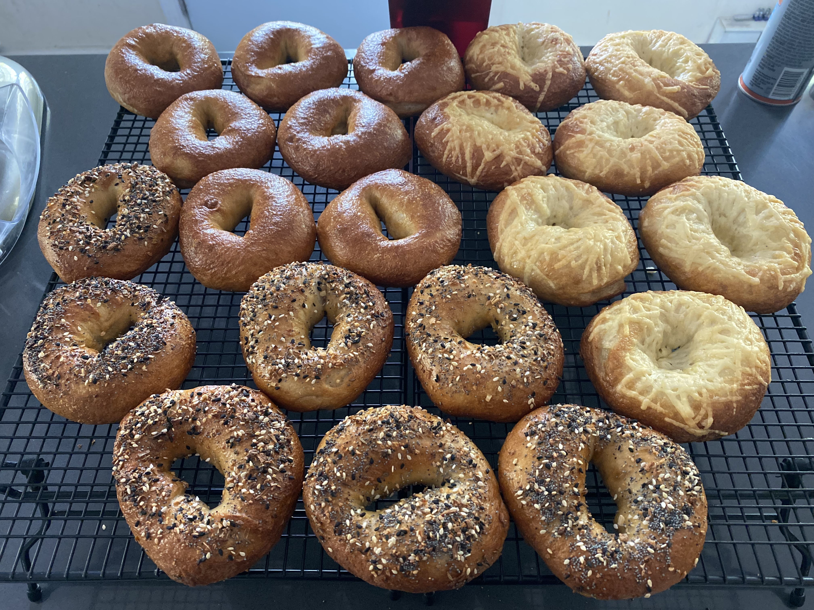

Bagels

Description
I consider myself a critic of the semi-recent food blog trend where following recipe instructions first means scrolling past a literal wall of text. Presumably describing the first time the blogger had ever tried said food, back when they were seven years-old and in the company of a grandparent with a rich heritage and an inclination to share it, which for the now blogger, then child, meant tasting the most delicious culinary treat of his or her entire life, and so this future wordpress expert would spend the next decade or so searching for said food and occasionally happening upon said food and it never tasting quite like the memory of said food, until finally, after several more years of modicum effort, this individual thinks to request the recipe from their grandparent; the very same recipe that the reader is about to experience, albeit after several more paragraphs that stress the importance of a key ingredient. And I say presumably because I don’t think I’ve actually read one of these stories. I scroll and scroll and scroll until my mouse wheel finger aches from the unexpected workout. But life is funny sometimes and so I am suddenly that food blogger with the penchant for storytelling.
It was this or me describing the taste and texture as if I were a neanderthal chewing on a rock while also trying to explain that rock to you.
Admittedly, I cannot recall when or why I decided to make bagels. I used to brew beer and so the transition from yeasted malt water to yeasted bread made sense. That and my father, who was born and raised on Long Island, New York, has been extremely particular about bagels, for all of my life and perhaps even yours. At some point I purchased The Bread Baker’s Apprentice by Peter Reinhart and I followed his recipe on bagels and created underbaked lumps with holes that vaguely resembled bagels and tasted better than any I had had prior. I, unsurprisingly, shared my many iterations with my father, who had proclaimed them as very good or better, and I believe him because he had always made sure to tell me when they weren’t. And so here we are, with me about to share the Nth iteration of my bagel recipe.
Ingredients
Sponge
- 508 g (4 cups) Bread Flour
- 591 g (2.5 cups)Water
- 1 tsp Instant Yeast
Dough
- 0.5 tsp Instant Yeast
- 1 Tbsp Salt
- 1 Tbsp Diastatic Malt Powder
- 444 g (3.5 cups) Bread Flour
Boil
Steps
- Combine all of the sponge ingredients together in a large bowl. Cover and leave for 2-3 hours, or until there are an excessive number of large bubbles.
- Add the dough ingredients to the sponge, leaving the flour for last and adding it only after you’ve combined the other ingredients first. The dough will become quite firm.
- Knead the dough by hand for no less than 8 minutes. It may take longer so don’t be afraid to over knead this one. Knowing when the dough is ready will take some experience. DO NOT use a stand mixer unless you know that it can handle a firm dough (my first stand mixer was defeated by a bagel dough).
- Place the dough into a large, oiled bowl. Cover it and place it into a refrigerator to rise overnight.
- In the morning, preheat an oven to 425 F before removing the dough from the refrigerator to degass with a good punch,
- Separate the dough into 12 equal pieces then allow them to rest for 5 minutes.
- Using the palm of your hand, roll each dough ball on the counter until the skin is tight and smooth. Your hand should resemble a claw holding an invisible ball while you are doing it. Allow them to rest for 15 minutes.
- Use your thumb to press a hole through the center of each ball, then rotate and stretch the dough around your thumb until the hole is a couple inches in diameter. Allow them to rest for as long as it takes a pot of water (with the added baking soda) to reach boiling.
- Add the bagels to the boiling water, making sure not to crowd the pot. Boil each side for 1 minute before removing the bagels from the water.
- Allow the bagels to rest for a couple of minutes before brushing the top with an egg wash (1 beaten egg + 1 Tbsp water). If you’re adding toppings then do that immediately after.
- Place the bagels into the oven, making sure that there are a couple of inches of space between each. Bake for 18-20 minutes.
- Remove from the oven and allow to cool for 1 hour.
- Enjoy and regret not making bagels sooner.